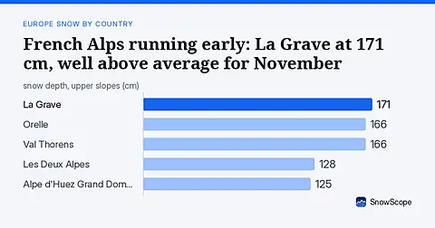

France snow report: snow depth, new snow and the week ahead
In France about 20,810 km² of high ground is white today, 23 % of the country's mapped mountains and hills. That is 700 km² less than yesterday. The deepest resort is La Grave with 153 cm on its upper slopes. Up to 3 cm of new snow could fall on the snowiest slopes in the week ahead.
See the live snow forecast for La Grave in the SnowScope appSnow depth, powder alerts and the 3D map, free.Today at a glance
| White area | 20,810 km² |
|---|---|
| Share of the high ground | 23 % |
| Most new snow in 24 h | 0 cm |
| Most new snow in 3 days | 9 cm |
| Next 3 days (snowiest slopes) | 3 cm |
| Next 7 days | 3 cm |
| Mostly white from | 1,400 m |
| Resorts with snow on top | 200 of 223 |
The last seven days
On 22 November about 16,440 km² was white; today it is 20,810 km².
The snow cover grew by 4,370 km² over these days.
The biggest three-day snowfall of the period reached 90 cm (to 22 November).
This season against a normal year
5 of the 5 deepest resorts are above their usual snow depth for 28 November.
La Grave: 108 cm at about 3,370 m, a normal year has 93 cm; Orelle: 82 cm at about 2,780 m, a normal year has 68 cm; Val Thorens: 110 cm at about 2,474 m, a normal year has 49 cm; Les Deux Alpes: 56 cm at about 2,398 m, a normal year has 42 cm; Alpe d'Huez Grand Domaine: 60 cm at about 2,215 m, a normal year has 34 cm.
These depths are for one height on each mountain, below the top.
In past winters the best snow at La Grave usually came mid-April / late April.
Snowiest resorts today
La Grave leads with 153 cm on its upper slopes.
Then come Orelle (141 cm), Val Thorens (141 cm), Les Deux Alpes (116 cm) and Alpe d'Huez Grand Domaine (108 cm).
| Resort | Upper slopes | New, 3 days | Next 3 days | Top |
|---|---|---|---|---|
| La Grave | 153 cm | 4 cm | 5 cm | 3,543 m |
| Orelle | 141 cm | 6 cm | 3 cm | 3,221 m |
| Val Thorens | 141 cm | 6 cm | 3 cm | 3,221 m |
| Les Deux Alpes | 116 cm | 3 cm | 3 cm | 3,511 m |
| Alpe d'Huez Grand Domaine | 108 cm | 7 cm | 2 cm | 3,306 m |
Where the snow is coming next
Up to 3 cm is expected on the snowiest slopes in the next three days, and up to 3 cm over the week.
The snowiest day looks like Sunday 29 November, with up to 3 cm.
The last three days brought the most fresh snow to Corsica, the French Pyrenees and the Mont Blanc massif.
The second week could add up to 12 cm where it snows most.
Snow by height
Height by height: 1,000-1,500 m: 2 cm on average, 21 % white; 1,500-2,000 m: 15 cm on average, 93 % white; 2,000-2,500 m: 26 cm on average, 99 % white; above 2,500 m: 51 cm on average, 100 % white.
Most of the ground is white from about 1,400 m up.
Planning a trip
Above 1,500 m the ground is almost fully white (93 % covered), so runs up there have a continuous base.
The resorts with the highest lifts are the safest bet: La Grave (3,543 m), Les Deux Alpes (3,511 m) and Alpe d'Huez Grand Domaine (3,306 m).
Day by day
- Saturday 28 November · 20,810 km² white, up to 9 cm of new snow in three days, deepest La Grave (153 cm)
- Friday 27 November · 21,450 km² white, up to 31 cm of new snow in three days, deepest La Grave (158 cm)
- Thursday 26 November · 22,700 km² white, up to 36 cm of new snow in three days, deepest La Grave (162 cm)
- Wednesday 25 November · 25,190 km² white, up to 38 cm of new snow in three days, deepest La Grave (169 cm)
- Tuesday 24 November · 17,580 km² white, up to 64 cm of new snow in three days, deepest La Grave (158 cm)
- Monday 23 November · 15,580 km² white, up to 78 cm of new snow in three days, deepest La Grave (166 cm)
- Sunday 22 November · 16,440 km² white, up to 90 cm of new snow in three days, deepest La Grave (171 cm) · French Alps running early: La Grave at 171 cm, well above average for November
Questions and answers
Is there snow in France right now?
Yes. About 20,810 km² of high ground is white, 23 % of the mapped mountains. The deepest resort is La Grave with 153 cm on its upper slopes.
Where is the most snow in France today?
La Grave leads with 153 cm on its upper slopes. Then come Orelle (141 cm), Val Thorens (141 cm) and Les Deux Alpes (116 cm).
Will it snow in France this week?
Up to 3 cm is expected on the snowiest slopes in the next three days, and up to 3 cm over the week. The snowiest day looks like Sunday 29 November, with up to 3 cm.
From what height is there snow in France?
Most of the ground is white from about 1,400 m up.
How much new snow fell in France in the last three days?
Up to 9 cm on the snowiest slopes, 0 cm of it in the last 24 hours. At least 5 cm fell over some 5,280 km². The last three days brought the most fresh snow to Corsica, the French Pyrenees and the Mont Blanc massif.
How many ski resorts in France have snow?
200 of the 223 resorts we follow have snow on their upper slopes today. Snow on top does not mean the lifts are open: check the resort before you go.
When is the best time to ski in France?
In past winters the best snow at La Grave usually came mid-April / late April.
Is the season off to a good start in France?
5 of the 5 deepest resorts are above their usual snow depth for 28 November.
Stories about France

La Grave has 171 cm of snow, far ahead of the typical 82 cm for late November. France's Alps gained 90 cm in 72 hours as of 22 November.

Orelle sits at 74 cm on 21 November, matching the seasonal average of 64 cm. France has 12,530 km² of snow cover as fresh storms arrive.

130 French resorts now have snow cover on 20 November. The Mont Blanc massif has received 297 cm in three days, with more expected.